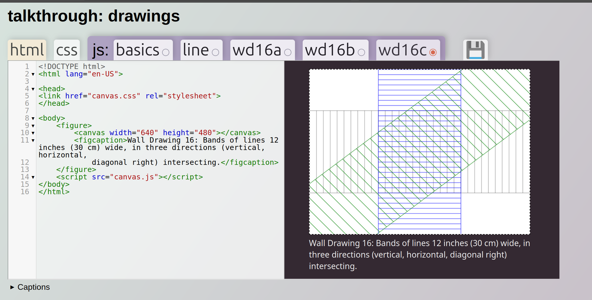

disclaimer: captions are generated and probably contain mistakes
jokerified scripting time using setTimeout, setInterval, and event listeners
using event listeners to detect when content has loaded and make code run based on video events
overlaying and controlling content on top of video, complete with an army of dancing Linuses
Steve Reich style tape loops in the browser
"that background elemente is the web equivalent of a jump scare"
Working with the track element to add timed text to timed content &how to access this material programmatically.
this one is pretty long and gets a bit rambly, no need to listen to me explain transcript.js unless you're really curious about how it works
source code and live on web; also - transcript.js
quick walkthrough of VTT and some tools for working with it
w3c vtt parser/validator; HappyScribe VTT editor; vtt-live-edit (a self-hosted vtt editor; server side tool for the bold)
introducing pericarp with two prototype projects, please use the table of contents below to navigate this long long long video
in this tutorial we look at Lisa Jevbratt's 'EVIDENCE (DAYS FOLLOWING DIFFERENCE)' and use blending modes on time-separated image composites. I start to try this with audio but things go awry!
tutorial is the top resource below
